SEQN OHXRCAR BMXBMI LBXGLU
Min. :109266 Min. :1.000 Min. :14.60 Min. : 47.0
1st Qu.:113197 1st Qu.:2.000 1st Qu.:25.00 1st Qu.: 96.0
Median :117101 Median :2.000 Median :28.90 Median :103.0
Mean :117105 Mean :1.864 Mean :30.24 Mean :113.5
3rd Qu.:121029 3rd Qu.:2.000 3rd Qu.:34.00 3rd Qu.:115.0
Max. :124822 Max. :9.000 Max. :92.30 Max. :451.0
NA's :796 NA's :117 NA's :4158 Visualization of BMI for Patients with Caries
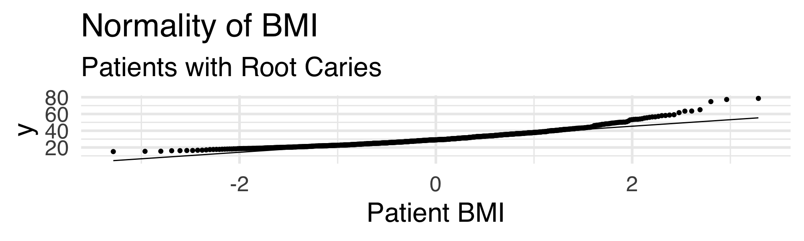
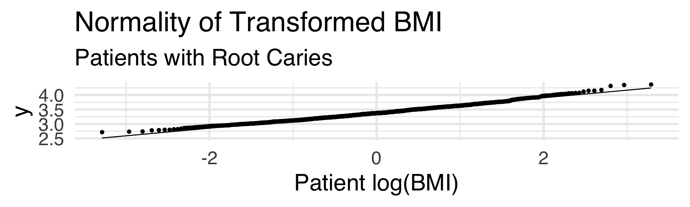
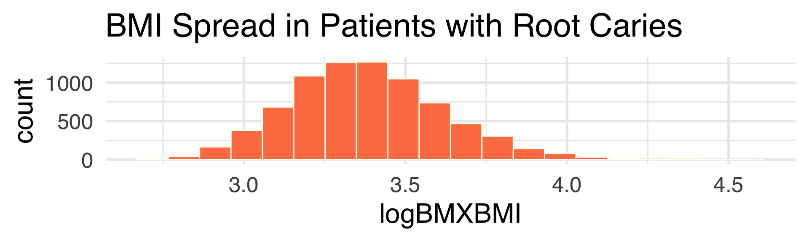
Visualization of Fasting Blood Glucose for Patients with Caries
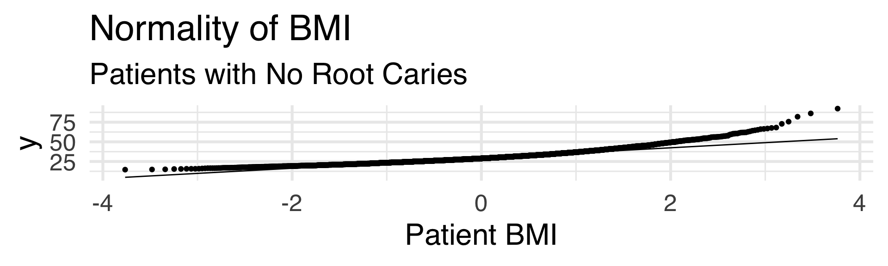

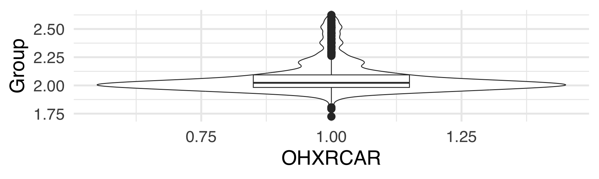
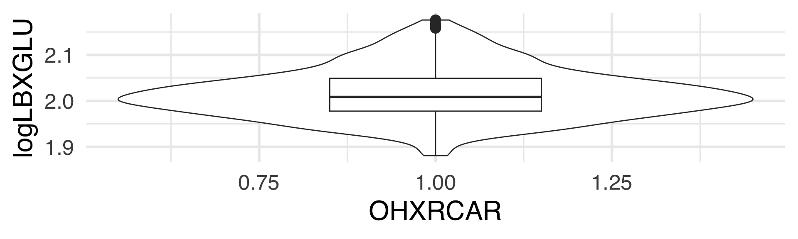
Linear Regression for Patients with caries (BMI v Fasting Glucose)
# Indices of model performance
AIC | AICc | BIC | R2 | R2 (adj.) | RMSE | Sigma
----------------------------------------------------------
7.768 | 7.829 | 19.704 | 0.096 | 0.094 | 0.243 | 0.243Visualization of BMI for Patients with No Caries

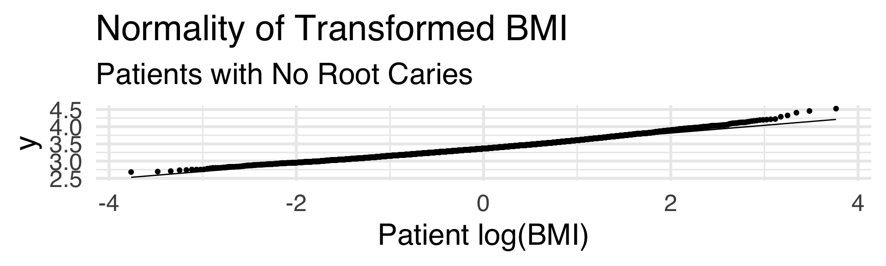
Visualization of Fasting Blood Glucose for Patients with No Caries
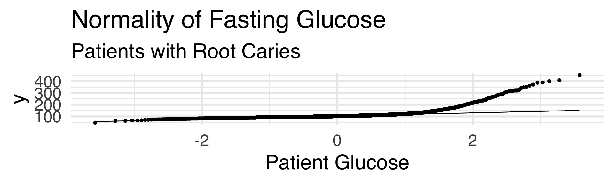
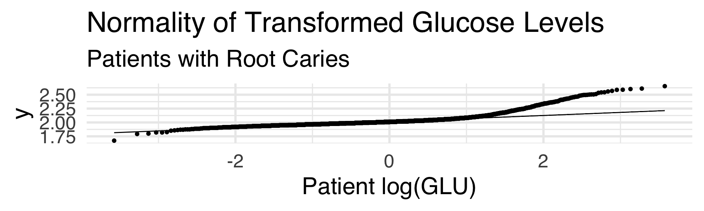
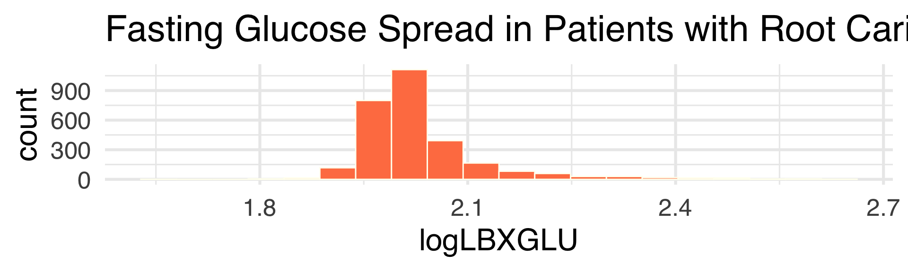
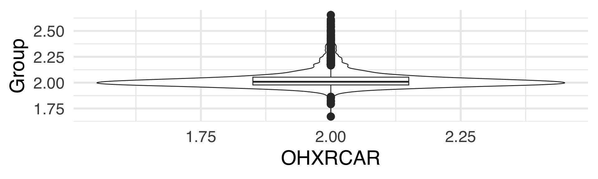
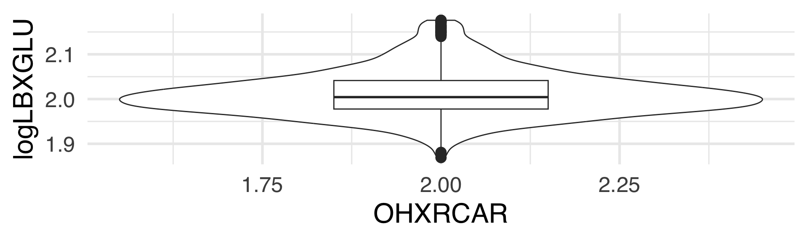
Linear Regression for Patients with No Caries (BMI v Fasting Glucose)
# Indices of model performance
AIC | AICc | BIC | R2 | R2 (adj.) | RMSE | Sigma
------------------------------------------------------------------
-391.343 | -391.333 | -373.745 | 0.063 | 0.063 | 0.224 | 0.224Splitting Fasting Glucose Levels Dependent on BMI, not caries
q40 q60
1 27.4 30.7
Call:
lm(formula = LBXGLU ~ BMXBMI, data = BMI_grplow)
Coefficients:
(Intercept) BMXBMI
69.167 1.568
Call:
lm(formula = LBXGLU ~ BMXBMI, data = BMI_grphigh)
Coefficients:
(Intercept) BMXBMI
103.7276 0.4551 Mean Lower Upper
106.3234 104.7214 107.9254 Mean Lower Upper
120.7803 118.5412 123.0193 Mean Lower Upper
106.3234 104.8634 107.9409 Mean Lower Upper
120.7803 118.7022 123.0227 # Indices of model performance
AIC | AICc | BIC | R2 | R2 (adj.) | RMSE | Sigma
-----------------------------------------------------------------------
14663.761 | 14663.777 | 14679.713 | 0.016 | 0.016 | 31.422 | 31.443# Indices of model performance
AIC | AICc | BIC | R2 | R2 (adj.) | RMSE | Sigma
-----------------------------------------------------------------------
14812.479 | 14812.496 | 14828.273 | 0.005 | 0.004 | 43.025 | 43.055 LBXGLU > 125 BMXBMI > 30 n
1 FALSE FALSE 1873
2 FALSE TRUE 1203
3 FALSE NA 43
4 TRUE FALSE 225
5 TRUE TRUE 336
6 TRUE NA 15
7 NA FALSE 2291
8 NA TRUE 1808
9 NA NA 59 LBXGLU < 125 BMXBMI > 30 n
1 FALSE FALSE 233
2 FALSE TRUE 359
3 FALSE NA 15
4 TRUE FALSE 1865
5 TRUE TRUE 1180
6 TRUE NA 43
7 NA FALSE 2291
8 NA TRUE 1808
9 NA NA 59 LBXGLU > 125 BMXBMI < 24.9 n
1 FALSE FALSE 2235
2 FALSE TRUE 841
3 FALSE NA 43
4 TRUE FALSE 501
5 TRUE TRUE 60
6 TRUE NA 15
7 NA FALSE 3133
8 NA TRUE 966
9 NA NA 59 LBXGLU < 125 BMXBMI < 24.9 n
1 FALSE FALSE 528
2 FALSE TRUE 64
3 FALSE NA 15
4 TRUE FALSE 2208
5 TRUE TRUE 837
6 TRUE NA 43
7 NA FALSE 3133
8 NA TRUE 966
9 NA NA 592 by 2 table analysis:
------------------------------------------------------
Outcome : Obesity
Comparing : Diabetes vs. No Diabetes
Obesity No Obesity P(Obesity) 95% conf. interval
Diabetes 336 225 0.5989 0.5578 0.6387
No Diabetes 1180 1865 0.3875 0.3704 0.4050
95% conf. interval
Relative Risk: 1.5455 1.4251 1.6761
Sample Odds Ratio: 2.3602 1.9637 2.8368
Conditional MLE Odds Ratio: 2.3597 1.9560 2.8502
Probability difference: 0.2114 0.1668 0.2547
Exact P-value: 0.0000
Asymptotic P-value: 0.0000
------------------------------------------------------